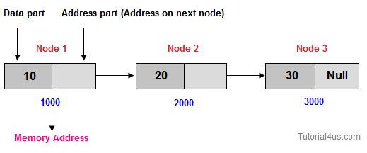

Linked List
Linked list is a special type of data structure where all data elements are linked to one another. Linked list is the collection of nodes and every nodes contains two parts data part and address part.

Why use Linked List
Suppose you want ot store marks of 50 students, so need to write code like below;Example
int marks[50];
But some time you need to store more than 50 students marks, in that case you can not increase memory of array, and some time you need to store less than 50 students marks in this case extra memory will be wastage. To overcome this problem you need to use Linked List because in linked list memory will be created at run time.Advantages of linked list
1. Linked List is Dynamic data Structure . 2. Linked List can grow and shrink during run time. 3. Insertion and Deletion Operations are Easier 4. Efficient Memory Utilization ,i.e no need to pre-allocate memory 5. Faster Access time,can be expanded in constant time without memory overhead 6. Linear Data Structures such as Stack,Queue can be easily implemetedusing Linked list
Dynamic Data Structure:
The size of linked list increase and decrease during program execution.No memory wastage:
In linked list memory will be allocated at the time of program execution so no memory wastage.Easily insert and delete data:
In linked list you can insert any data at specific position and also delete any data from specific position.Add a node at the beginning of the linked list
Add a node at the beginning of the linked list..
node* head;First, we need to create a new node. We will need to create a new node each time we want to insert a new node into the list so we can develop a function that creates a new node and return it.
node* create(int data,node* next)
{
node* new_node = (node*)malloc(sizeof(node));
if(new_node == NULL)
{
printf("Error creating a new node.\n");
exit(0);
}
new_node->data = data;
new_node->next = next;
return new_node;
}
Second, we need to point the next pointer of the new node to the head pointer and point the head pointer to the new node. It works for both empty and non-empty linked list.
node* prepend(node* head,int data)
{
node* new_node = create(data,head);
head = new_node;
return head;
}

Insert a new node after a particular node
To insert a new node after a particular node, we need to: First, verify if the node exists in the list, we call this node is prev nodenode *cursor = head; while(cursor != prev) cursor = cursor->next;If it exists, we point the next pointer of the new node to the next node that the next pointer of the prev node points to, and point the next pointer of the prev node to the new node.
node* new_node = create(data,cursor->next); cursor->next = new_node;The insert_after() function is as follows:
node* insert_after(node *head, int data, node* prev)
{
/* find the prev node, starting from the first node*/
node *cursor = head;
while(cursor != prev)
cursor = cursor->next;
if(cursor != NULL)
{
node* new_node = create(data,cursor->next);
cursor->next = new_node;
return head;
}
else
{
return NULL;
}
}
Insert a new node at the End of the list

Since a Linked List is typically represented by the head of it, we have to traverse the list till end and then change the next of last node to new node.
void append(struct Node** head_ref, int new_data)
{
/* 1. allocate node */
struct Node* new_node = (struct Node*) malloc(sizeof(struct Node));
struct Node *last = *head_ref; /* used in step 5*/
/* 2. put in the data */
new_node->data = new_data;
/* 3. This new node is going to be the last node, so make next
of it as NULL*/
new_node->next = NULL;
/* 4. If the Linked List is empty, then make the new node as head */
if (*head_ref == NULL)
{
*head_ref = new_node;
return;
}
/* 5. Else traverse till the last node */
while (last->next != NULL)
last = last->next;
/* 6. Change the next of last node */
last->next = new_node;
return;
}
Types of linklist
| Type | GoTo Live |
|---|---|
| Linear Link list | |
| Doubly linklist | |
| Circuler Link list | |
| Circuler doubly linklist |